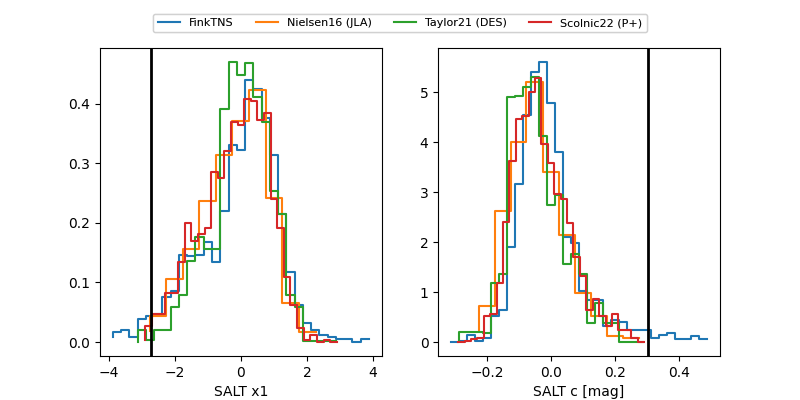

TNS: 2025xro
YSE: 2025xro
2025xro (yse,tns)
PS25hnl (panstarrs)
equatorial (ra, dec) = (231.4378,-3.65871)
galactic (l, b) = (359.3913,+41.70058)

last ps1::g=19.48, ps1::r=19.10, ps1::z=19.05
2 ps1::g, 1 ps1::r, 1 ps1::z detections